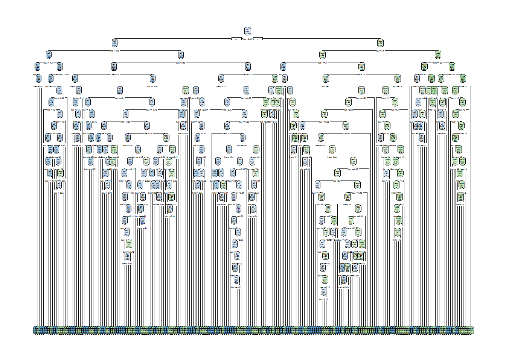
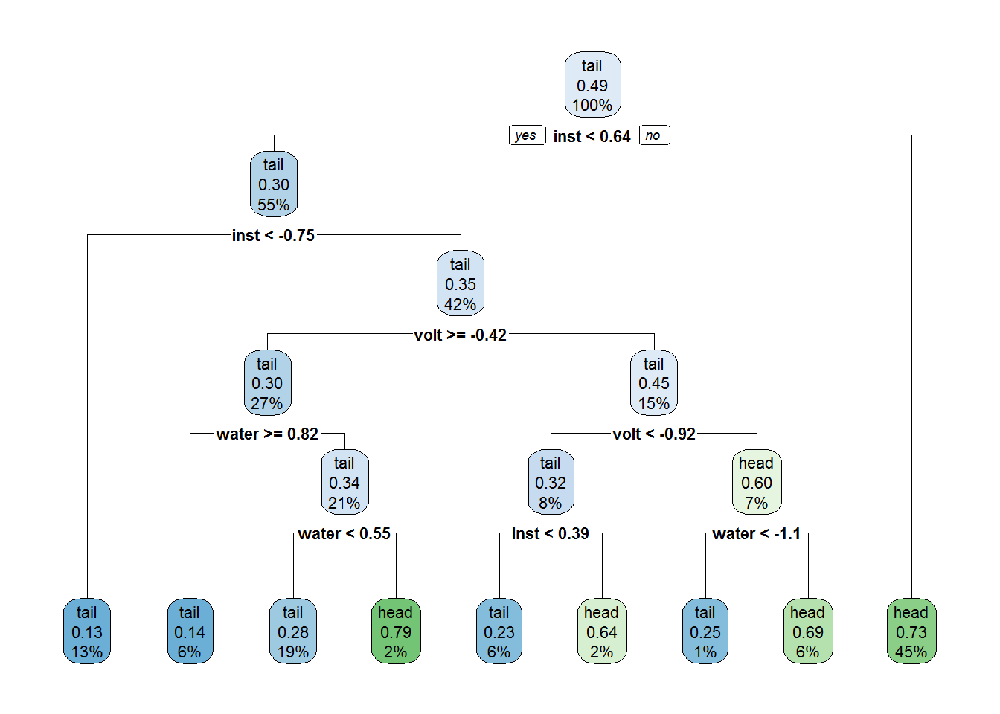
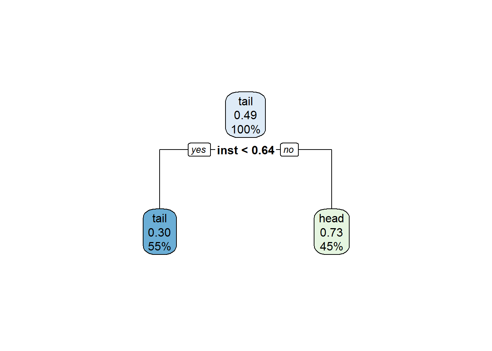

A Demonstration of Overfitting
If you work with data and do any sort of model building, no doubt you have seen the word “overfitting” floating about. What is it and why do we need to care? Look on to find out!
In the beginning, there was noise…
Imagine you have a metal coin. The coin is coated with a very thin layer of rubber on only one side. You decide that you want to toss the coin in the air 1000 times and record the sound it makes when it lands on your table. It’s not a stretch to think it’s in fact possible to tell which side of the coin is ultimately facing up from the sound alone. The goal is predict which side is up using just the sound instead of Mark I Eyeballs.
Unfortunately you have some important business to attend to so you ask your friend, Mad Scientist Mike, to conduct the experiment in your stead. When you come back, you find out that the microphone is also picking up Mike walking around in the room and the birds chirping outside. Furthermore, Mike has decided to be true to his name and recorded water pressure and voltage deviation of the house in the mean time.
You are now faced with a dilemma. Your gut feeling tells you some of the data you have may not be connected to your experiment outcomes. If that’s the case, then they are part of your measurements makes them unwanted noise. If you are not careful when dealing with the noise, your model might become:
- Overtly complicated, with parts and terms trying to explain the noise rather than actually important features.
- Poor in making predictions. Any slight fluctuations due to noise can cause the model to overreact!
A Simplified Simulation
Let’s use a simulated data set to help us understand what may happen.
# Load all required libraries.
library("caret")
library("rpart")
library("rpart.plot")
set.seed(123)
toss <- rbinom(1000, 1, 0.5)
inst <- rnorm(1000) + toss
volt <- rnorm(1000)
water <- rnorm(1000)
toss_fac <- factor(toss, labels = c("tail", "head"))
data <- data.frame(inst = inst, volt = volt, water = water, response = toss_fac)The response is 1000 tosses drawn from a binomial distribution and factored into either tail or head. The predictors are
- The
instrument measurement modeled simply as the response + a normally distributed signal noise. - The deviation in
voltage in the electrical circuits of the house. Modeled as a standard normal distribution. - The deviation in
waterpressure of the house. Modeled as a standard normal distribution.
The data is then split into training and vadliation sets.
inTrain <- createDataPartition(toss_fac, p = 0.6, list = FALSE)
data.train <- data[inTrain, ]
data.validation <- data[-inTrain, ]I am now going to train three decision tree models using the training sets, each demonstrating a different aspect.
Model 1: Model every little thing from the instrument!
This model will use a huge amount of splitting and very small leafs to fit the training data. The goal of this model is to try to achieve very high accuracy on the training set using the instrument measurement at all costs.
First we will set up the hyper-parameters for the tree model.
treeCon.over <- rpart.control(minsplit = 2, minbucket = 1, cp = 0, xval = 10)The exact meaning of the parameters are not super important but here it is:
minsplit: controls how many training data points a node has to have before the algorithm can attempt to grow branches from it.
minbucket: how many training data points a leaf must at least have in the final tree.
cp: controls how good a branch must be before it can be kept. Each branch must increase model quality (ie: R^2) by at least cp or it will be cut-off.
xval: number of cross-validation folds to be used for pruning (don’t worry if you don’t know what it means).
So with this in mind, our tree is pretty much set up to be as complex as possible. Here’s the code to build the model:
set.seed(1)
tree1 <- rpart(response ~ inst, data = data.train, control = treeCon.over)Notice that I have thrown away the other stuff Mike collected such as voltage and water pressure. The model is built using the noisy instrument signal as its sole predictor. Let us plot the tree structure.
rpart.plot(tree1)
Whoa! That is indeed an extremely complex tree. However, what will the effect be on training set accuracy? Let’s find out:
pred.train1 <- predict(tree1, data.train, type = "class")
conMat1 <- confusionMatrix(pred.train1, data.train$response)
conMat1## Confusion Matrix and Statistics
##
## Reference
## Prediction tail head
## tail 305 3
## head 0 293
##
## Accuracy : 0.995
## 95% CI : (0.985, 0.999)
## No Information Rate : 0.507
## P-Value [Acc > NIR] : <2e-16
##
## Kappa : 0.99
## Mcnemar's Test P-Value : 0.248
##
## Sensitivity : 1.000
## Specificity : 0.990
## Pos Pred Value : 0.990
## Neg Pred Value : 1.000
## Prevalence : 0.507
## Detection Rate : 0.507
## Detection Prevalence : 0.512
## Balanced Accuracy : 0.995
##
## 'Positive' Class : tail
## An accuracy of 0.995. That is extremely high. Should we choose this one as our final model? Let’s build a couple other models first.
Model 2: Include all features!
Let’s change some hyper-parameters:
treeCon <- rpart.control(minsplit = 10, minbucket = 3, cp = 0.01, xval = 10)So we have made each branching node and leaf larger, with also a higher quality improvement requirement during pruning. Let’s build the model now.
set.seed(1)
tree2 <- rpart(response ~ inst + volt + water, data = data.train, control = treeCon)Notice that although our hyper-parameters demand an overall decrease in structural complexity of the tree, we are now also using the other features Mike collected such as voltage and water pressure deviations to construct the model. Here’s the final strucutre:
rpart.plot(tree2)
As expected, this is a much simpler tree in terms of sturctural complexity (albeit still pretty complex). However it does make use of all three features, some of them we suspect to be useless. What about its training set accuracy?
pred.train2 <- predict(tree2, data.train, type = "class")
conMat2 <- confusionMatrix(pred.train2, data.train$response)
conMat2## Confusion Matrix and Statistics
##
## Reference
## Prediction tail head
## tail 248 76
## head 57 220
##
## Accuracy : 0.779
## 95% CI : (0.743, 0.811)
## No Information Rate : 0.507
## P-Value [Acc > NIR] : <2e-16
##
## Kappa : 0.557
## Mcnemar's Test P-Value : 0.119
##
## Sensitivity : 0.813
## Specificity : 0.743
## Pos Pred Value : 0.765
## Neg Pred Value : 0.794
## Prevalence : 0.507
## Detection Rate : 0.413
## Detection Prevalence : 0.539
## Balanced Accuracy : 0.778
##
## 'Positive' Class : tail
## With an accuracy of 0.7787 it seems to be markedly worse than model 1…or is it? At the very least it still has quite a bit of predictive power since it’s accuracy is significantly higher than the No Information Rate. Let’s build one final model.
Model 3: Simple structure with only the relevant feature.
No changes will be made to the hyper-parameters here. Instead, we will train the model with just one difference:
set.seed(1)
tree3 <- rpart(response ~ inst, data = data.train, control = treeCon)This tree is built with the same complexity parameters as our last tree, but only using the instrument measurements as its feature. Let’s check out its structure:
rpart.plot(tree3)
Clearly this is the simplest tree by far in terms of both structure and feature usage. How about its accuracy on the training set?
pred.train3 <- predict(tree3, data.train, type = "class")
conMat3 <- confusionMatrix(pred.train3, data.train$response)
conMat3## Confusion Matrix and Statistics
##
## Reference
## Prediction tail head
## tail 262 123
## head 43 173
##
## Accuracy : 0.724
## 95% CI : (0.686, 0.759)
## No Information Rate : 0.507
## P-Value [Acc > NIR] : < 2e-16
##
## Kappa : 0.445
## Mcnemar's Test P-Value : 8.7e-10
##
## Sensitivity : 0.859
## Specificity : 0.584
## Pos Pred Value : 0.681
## Neg Pred Value : 0.801
## Prevalence : 0.507
## Detection Rate : 0.436
## Detection Prevalence : 0.641
## Balanced Accuracy : 0.722
##
## 'Positive' Class : tail
## Uh oh. With an accuracy of 0.7238 this is by far the worst model we have built! I guess it’s clear we should use the big tree from model 1 as our final model, right? Oh wait, we split the data into training and validation set! Since the models are all built on the training set they have no ideas what the validation set looks like. If we feed the models the validation set we can make actual predictions with them and get a sense on its predictive accuracy. How exciting! Let’s do it.
Performance Evaluation (Validation)
Here’s the code to make predictions on the validation set and compute the prediction statistics:
pred.validation.1 <- predict(tree1, data.validation, type = "class")
pred.validation.2 <- predict(tree2, data.validation, type = "class")
pred.validation.3 <- predict(tree3, data.validation, type = "class")
confMat.valid.1 <- confusionMatrix(pred.validation.1, data.validation$response)
confMat.valid.2 <- confusionMatrix(pred.validation.2, data.validation$response)
confMat.valid.3 <- confusionMatrix(pred.validation.3, data.validation$response)I am just going to list the accuracies below in a table:
df <- data.frame(Model = c("Model 1", "Model 2", "Model 3"), Accuracy = c(confMat.valid.1$overall[1],
confMat.valid.2$overall[1], confMat.valid.3$overall[1]))
kable(df)| Model | Accuracy |
|---|---|
| Model 1 | 0.6065 |
| Model 2 | 0.6692 |
| Model 3 | 0.6792 |
Well well, the table has turned! The big tree in model1, although has an amazing training set accuracy, is now the definitive last place when it comes to making predictions on the validation set. The tree with the worst training set performance, the tree with low complexity parameters and only using the instrument measurement as its feature, is now the best performer. Why is that?
Discussion
By now you probably have a good idea to the answer already. The first two trees overfit the data (especially the first one). The first model contains too many nodes and leafs. The result is it is able to fit every single data point in the training set into single leafs by itself and simply look them up. No wonder it has such amazing (and grossly inflated) training set accuracy. However, when it comes to making actual predictions on the validation set all the noise throws it off and causes it to overreact on noisy signals that don’t have any real effect on the response. The result is terrible predictive accuracy.
Although the second tree tries to avoid very complex structure, it uses features that are clearly useless in predicting the response (water pressure and voltage deviations…really, Mike?). The good thing is the pruning process is able to catch some of these and cut them off the trees so it doesn’t make too much of a negative impact on its prediction accuracy.
Nevertheless, you can see that model 3, with the simplest structure and using only the relevant feature, turns out to be the best one in the end. This simple structure is achieved by tuning hyper-parameters and using only relevant features aka feature selection. In this case, they are largely done by experience and logic. I know beforehand that the data is noisy and two of the features are useless, so all I need to do is just selecting sensible model parameter values relative to my other choices and get rid of useless features. This is actually an excellent way to build models as it is not done using information obtained directly from the data so there is no risk of overfitting.
For a model builder, the biggest problem with overfitting is it contaminates model performance assessment which leads to making the wrong choice. Think back on the inflated training set accuracies. If I used the training set accuracy as the performance indicator I would have chosen the worst model in the end. Some may ask, what if I tweak model parameters and select features using the statistics produced by a previous model? The truth is, whenever you are using the data to gain information about what your model should be, what features you shoud select etc, you can potentially overfit. For example, now I know the prediction accuracies of the three models on the validation set, if I go back, tweak some parameters/select some features and retrain the model on the training set to improve my prediction accuracy on the validation set, the validation set accuracy is likely going to be biased due to overfitting as well. Why? Because the accuracy assessment on the validation set is information gleaned from the validation set. By going back to make model tweaks based on it, information in the validation set is now spilling over to the model training process and the validation set accuracy will likely become biased just like the training set accuracies.
Wait, does this mean we can only use the validation set to produce an accurate estimate of model performance ONCE? Well, technically, yes. However, there are techniques to repeatedly produce accurate performance estimates and avoid/delay bias caused by overfitting such as resampling. We shall see this in another post.